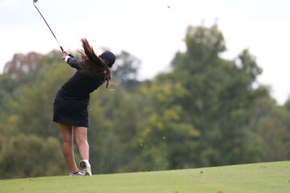

The High School Golf Association is committed to passing on the
great sport of golf to the next generation. Since our founding in
2004, we have been carrying out this purpose by making golf
more accessible to high school students. Twenty years later,
we are still relentlessly chasing our vision of a nation where golf
is a highly popular sport among teenagers who will grow up to
make valuable contributions to the game.


The High School Golf Association all started in 2004, when Jodene Proger,
a fourteen-year-old avid golfer, had a problem. Her dream of playing
on the high school golf team was crushed at her discovery that her
school didn't have one. But Jodene did not let that stop her.
Jodene gathered a group of young golfers like her and, after months
of tireless work, they created a team which would go on to win
many state championships. As word of Jodene's accomplishment spread,
many other young golfers worked with her and the group to start more
golf teams. As more and more teams were formed and new members were added
to the group, Jodene gave the organization a name, the "High School Golf
Association". After the original group graduated, they continued
developing the HSGA by planning the first Full Swing Conference
in their hometown of Detroit, Michigan. Using the support generated from
the convention, Jodene grew the HSGA team to move the organization nationwide.
Through the support of several state athletic associations,
the HSGA is still continuing its purpose of growing the game of golf
through high school students twenty years later.